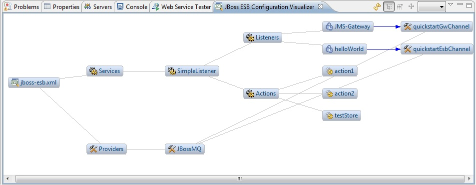

| ESB 4.10 Support |
We have a new dependency visualizer for ESB that shows a graphical view of an ESB configuration file. This is useful to show dependencies between components - like how queues are referenced by listeners.

The tool has the following functionality:
- Can be opened by right-clicking on any ESB configuration file and selecting "Show In->JBoss ESB Configuration Visualizer"
- If already open and you select a different ESB configuration file, the view will refresh to show the new file automatically.
- Though read-only, you can double-click on any element to open the ESB file and show that component in the JBoss ESB Editor.
- You can change the layout of nodes in the view by selecting one of the following three options on the toolbar: Horizontal Tree (default), Vertical Tree, and Radial. Each offers a different perspective on the configuration.
- You can move each node on the canvas independently.
- If you want to freeze a node you've moved so you can refresh the layout to see other nodes more clearly, you can right-click on a node and select "Freeze Node on Double-click" (or select it in the View menu drop-down). With this mode activated, simply double-click on the node you want to freeze. The border changes to a thicker line to indicate that a node is frozen. You can still move it manually, but the node no longer moves when you select a different layout type.
Related Jira: JBIDE-10726
|